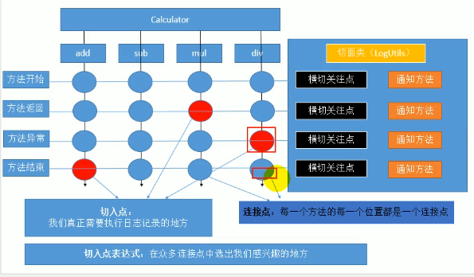

12.11 AOP 的一些术语、简单配置
需要加日志的地方：方法开始、方法返回、方法异常、方法结束 每个方法都是4个位置。

横切关注点：把方法横向来看
切面类：存放横切关注点、通知方法的类，也就是LogUtils
连接点：每一个方法的每一个位置都是一个连接点，一共是16个连接点。
切入点：真正需要执行日志记录的地方，切入点是从众多连接点中选出我们感兴趣的地方
切入点表达式：在众多连接点中选出我们感兴趣的地方
弹幕说，AOP=切入点+通知
AOP使用步骤
导包
- aspect包（基础 版）
- cglib aopalliance aspectj（加强版）
配置
- 将目标类添加到容器中
1
2
3
4
5
6
7
8
9
10
11
12//一定要有这个 告诉Spring是一个目标
public class CalculatorImpl implements Calculator {
public int add(int i,int j ){
return i+j;
}
public int sub(int i,int j){
return i-j;
}
}1
2
3
4
5
6
7
8
9
10
11
12
13
14
15
<beans xmlns="http://www.springframework.org/schema/beans"
xmlns:xsi="http://www.w3.org/2001/XMLSchema-instance"
xmlns:context="http://www.springframework.org/schema/context"
xmlns:aop="http://www.springframework.org/schema/aop"
xsi:schemaLocation="http://www.springframework.org/schema/beans
http://www.springframework.org/schema/beans/spring-beans.xsd
http://www.springframework.org/schema/context
http://www.springframework.org/schema/context/spring-context-3.0.xsd
http://www.springframework.org/schema/aop
http://www.springframework.org/schema/aop/spring-aop-3.1.xsd">
<context:component-scan base-package="com.runsstudio"></context:component-scan>
<!-- 开启基于注解的AOP空间：aop名称空间-->
<aop:aspectj-autoproxy></aop:aspectj-autoproxy>
</beans>xml里面 aop context 命名空间都得添加
1
2
3
4
5
6
7
8
9
10
11
12
13
14
15
16
17
18
19
20
21
22
23
24
25
26
27
28
29
30
31
32
33
34
35
36
37
38
39
40
41
42
43
44
45
46
47
48
49
50
51
52
53
54
55
56
57
58
59
60
61
62
63
64
65
66
67
68
69//LogUtils
package com.runsstudio;
import org.aspectj.lang.JoinPoint;
import org.aspectj.lang.Signature;
import org.aspectj.lang.annotation.*;
import org.springframework.stereotype.Component;
import java.util.Arrays;
//告诉Spring这个类是切面类
public class LogUtils {
/**
* 告诉Spring每个方法都什么时候运行
* try{
* @Before
* Method.invoke(obj,args)
* @AfterReturning
* }catch(e){
* @AfterThrowing
* }finally{
* @After
* }
*
* 通知注解：
* @Before 前置通知
* @After 后置通知
* @AfterReturning 在目标方法正常返回之后 返回通知
* @AfterThrowing 在目标方法抛出异常之后运行 异常通知
* @Around: 环绕通知
*/
//想在执行目标方法之前，需要表达式写清楚执行哪个类
//execution(权限修饰符 返回值 方法签名) 告诉Spring 何时何地运行
//在目标方法运行之前运行
public static void logBeforeMethod(JoinPoint joinPoint){
Object[] args = joinPoint.getArgs();//获取目标方法运行参数
System.out.println("args:"+ Arrays.toString(args));
Signature signature = joinPoint.getSignature();//获取方法签名
String name = signature.getName();
System.out.println(name+":beforeMethodLog....");
}
//在目标方法运行结束之后运行
public static void logAfterMethod(JoinPoint joinPoint){
Object[] args = joinPoint.getArgs();//获取目标方法运行参数
System.out.println("args:"+ Arrays.toString(args));
Signature signature = joinPoint.getSignature();//获取方法签名
String name = signature.getName();
System.out.println(name+"afterMethodLog....");
}
// @Around("execution(public int com.runsstudio.impl.CalculatorImpl.*(int,int))")
// public static void logSurroundMethod(){
// System.out.println("logSurroundMethodLog....");
// }
public static void logExceptionMethod(JoinPoint joinPoint, Exception exception){
System.out.println(exception.getMessage());
System.out.println("发生异常啦....");
}
public static void logAfterReturningMethod(JoinPoint joinPoint,Object result){
Object[] args = joinPoint.getArgs();//获取目标方法运行参数
System.out.println("args:"+ Arrays.toString(args));
Signature signature = joinPoint.getSignature();//获取方法签名
String name = signature.getName();
System.out.println(name+",result="+result.toString());
}
}使用
开启基于注解的AOP功能
使用：
1 | package com.runsstudio.test; |
IOC容器中保存的都是代理对象
CGLIB的作用：为没有接口的类创建代理对象，有接口的类用JDK创建
一些细节：
- 切入点表达式（访问权限符 返回值 方法全类名（参数列表））
- *匹配一个或多个字符 比如
- .星号还可以匹配任意一个参数(int,*) 第一个是int类型，第二个是任意的 double或int都可以
- .. 任意多个参数和任意多个类型参数 (..) 任意多个参数
- 全类名写com.runsstudio.* 可以匹配任意包
- public 是想写也行 不想写也行
- 最精确的：execution(public int com.runsstudio.impl.CalculatorImpl.add(int,int))
- 最模糊的：execution(* *. *()) 任意包、任意类、任意方法 （千万别写）
执行顺序：
1 | * try{ |
各个方法 对权限修饰符没有要求，但是 每个参数的意义都得告诉Spring 比如上面after returning 的Object result 顺便一说 如果写String result 也是可以的 但是这样的话返回int就接受不到了
细节7 可以将Execution 抽取出来（抽取可重用Execution）
- 随便声明一个没有实现返回的空方法
- 在这个方法上 写一个注解@PointCut
- 然后抽取，案例如下
1 |
|
细节8 环绕通知
相当于四合一
环绕通知在普通通知前面执行 环绕的代码是优先的
细节9 多个切面同时切入
先切入的先切出，后切入的后切出，用@Order(1) 数字小的在前面，如果不指定的话就是第一个字母 在前面的先执行